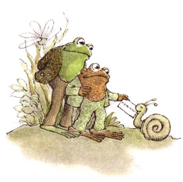

Frog and Toad are the main characters in a series of easy-reader children's books, written and illustrated by Arnold Lobel.
Each book contains five simple, often humorous, sometimes poignant, short stories chronicling the exploits of a frog and his friend, a toad, simply named Frog and Toad. Some of their adventures include: attempting to fly a kite, cleaning Toad's messy house as opposed to waiting until "Tomorrow" to do so, and figuring out the ethics of being "Alone".
The two protagonists do carry specific traits about their personalities and appearance. Frog is taller, with a green shade, and is more friendly and relaxed than Toad; Toad is shorter and stout, with a brown shade and also the more serious and irritable of the duo.
Taken from the article, Frog and Toad at Wikipedia